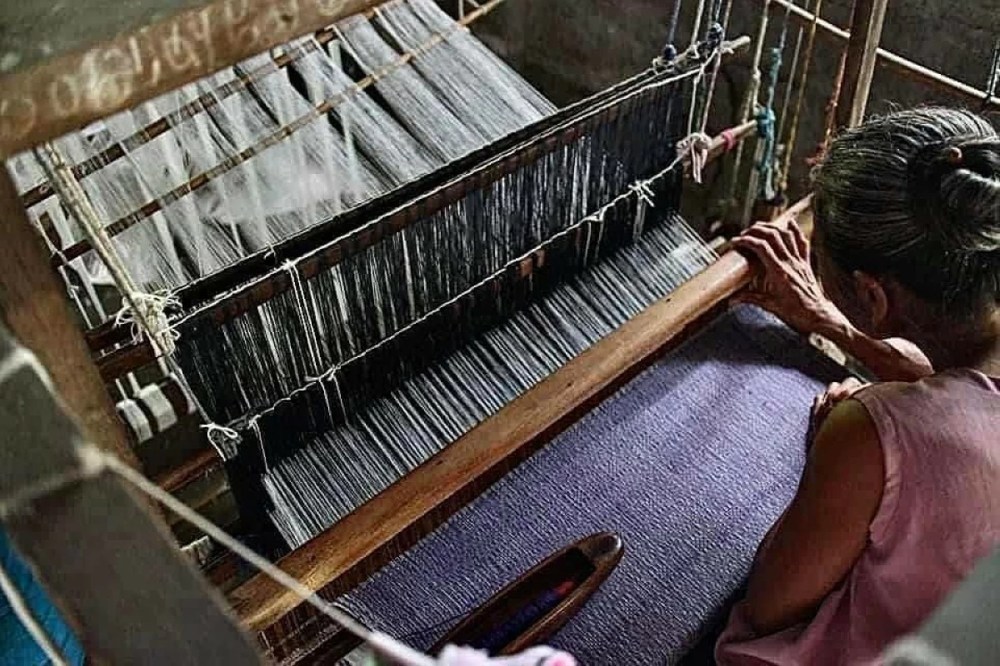
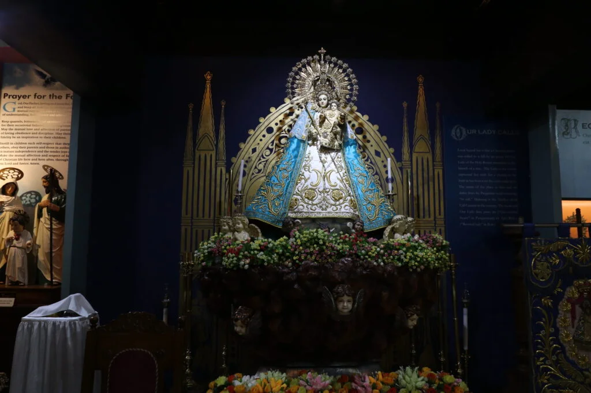
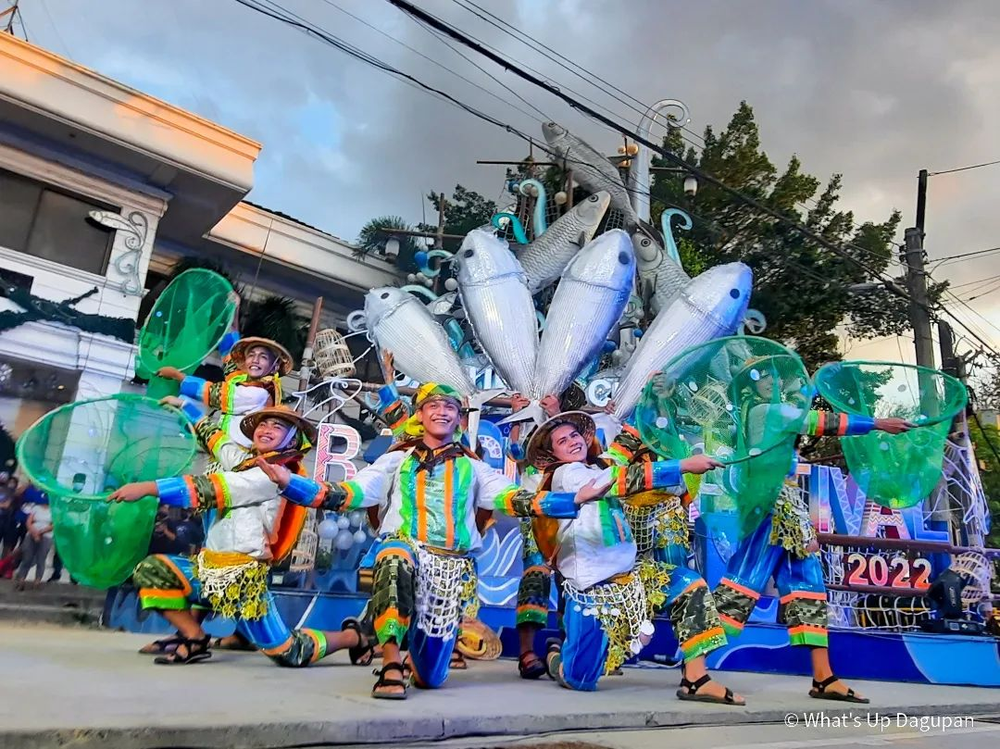
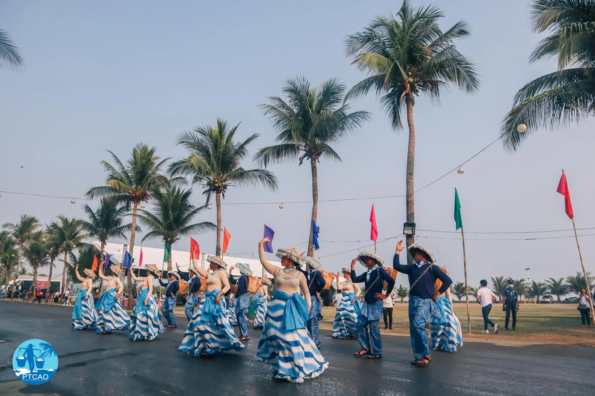

Cultural Traditions

Abel Weaving
Abel weaving is a traditional textile art in Pangasinan known for its strength and intricate patterns. Local artisans pass this skill through generations, and many communities still produce handwoven fabrics used in clothing and souvenirs.
Folk Music & Arts
Pangasinan is rich in musical heritage, especially songs like “Malinac Lay Labi.” These songs reflect love, history, and local identity, often performed during festivals and community gatherings.

Religious Traditions
Faith is deeply rooted in Pangasinan culture. Pilgrimages, church visits, and religious celebrations are common, especially in towns like Manaoag where devotion plays a big role in daily life.
Festivals & Cultural Events
Bangus Festival

Location: Dagupan City
Month Celebrated: April
Date: Usually last week of April
The Bangus Festival celebrates Dagupan as the “Milkfish Capital of the Philippines.” It features street dancing, cooking contests, and the famous “Kalutan ed Dalan,” where thousands of bangus are grilled along the streets. It reflects the strong connection between locals and their fishing industry.
Pista’y Dayat (Sea Festival)

Location: Lingayen
Month Celebrated: May
Date: May 1 (with extended activities)
Pista’y Dayat is a thanksgiving festival honoring the sea. It includes beach activities, street dancing, and cultural shows. Coastal communities celebrate this festival to show gratitude for the ocean’s resources that support their livelihood.